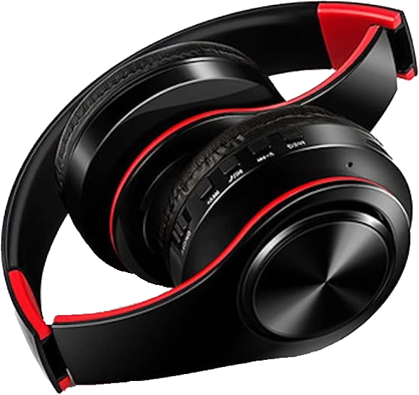
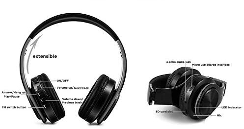

About

Noise Cancelling
Noise-cancelling headphones were originally created for airplane pilots to improve their comfor on long flights, and the first consumer versions were also intented for travellers.
The technology, known as active noise-cancellation (ANC), works by using microphones to pick up low-frequency noise and neutralise it before it reaches the ear. The headset generates a sound that's phase-inverted by 180 degrees to the unwatnted noise, resulting in two sounds cancelling each other out.
Comfortable
Designed by experts on the field for over 50 years, the RADIOPHON headphones are extremely comfortable and durable. Some headphone become irritating and sumbersome after a long time of wearing them, but out headphones are made of pure silicon, so it is just like wearing another layer of skin over your ears.
Affordable
Built with raw materials that are readily available, RADIOPHON makes the most affordable headphones available in the high-end market. You cannot find another one with the same specs that matches our price.
Parts

Details
Size and Weight: 2.4 x 1.7 x 0.9 inches, 8.8 ounces
Battery Life (Rated): 4.5 hours (NC on). 24 hours (with charging case)
Bluetooth Range: 30 feet (10 meters)
Digital Assistant Support: Yes

Included
- Modern, Functional design
- Great active noise cancelling
- Comfortable semi-custom fit
- Comfortable semi-custom fit
- Great sound
Needed
- Companion App
- Extended Battery